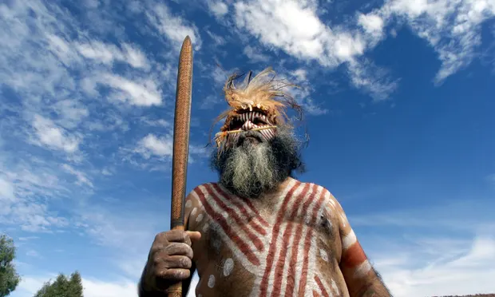

Discover Australia
Australia, the smallest continent and one of the largest countries on Earth, lying between
the Pacific
and
Indian oceans in the Southern Hemisphere. Australia’s capital is Canberra, located in the southeast
between the
larger and more important economic and cultural centres of Sydney and Melbourne.
About Australia
The Australian mainland extends from west to east for nearly 2,500 miles (4,000 km) and from Cape
York Peninsula in the northeast to Wilsons Promontory in the southeast for nearly 2,000 miles
(3,200 km). To
the south, Australian jurisdiction extends a further 310 miles (500 km) to the southern
extremity of the
island of Tasmania, and in the north it extends to the southern shores of Papua New Guinea.
Australia is
separated from Indonesia to the northwest by the Timor and Arafura seas, from Papua New Guinea
to the northeast
by the Coral Sea and the Torres Strait, from the Coral Sea Islands Territory by the Great
Barrier Reef, from New
Zealand to the southeast by the Tasman Sea, and from Antarctica in the far south by the Indian
Ocean.
History

Australia has been called “the Oldest Continent,” “the Last of Lands,” and “the Last Frontier.”
Those
descriptions typify the world’s fascination with Australia, but they are somewhat
unsatisfactory. In
simple
physical terms, the age of much of the continent is certainly impressive—most of the rocks
providing the
foundation of Australian landforms were formed during Precambrian and Paleozoic time (some 4.6
billion
to 252
million years ago)—but the ages of the cores of all the continents are approximately the same.
Claims that Indigenous Australians are the most ancient continuous civilisation on Earth have
been backed by the first extensive study of their DNA, which dates their origins to more than
50,000 years ago.
Scientists were able to trace the remarkable journey made by intrepid ancient humans by sifting
through clues left in the DNA of modern populations in Australia and Papua New Guinea. The
analysis shows that their ancestors were probably the first humans to cross an ocean, and
reveals evidence of prehistoric liaisons with an unknown hominin cousin.
Climate
Australia's climate is governed mostly by its size and by the hot, sinking air of the subtropical
high pressure belt (subtropical ridge or Australian High). This moves north-west and north-east
with the seasons. The climate is variable, with frequent droughts lasting several seasons,
thought to be
caused in part by the
El Niño-Southern Oscillation. Australia has a wide variety of climates due to its large
geographical size. The largest part of Australia is desert or semi-arid. Only the south-east and
south-west corners have a temperate climate and moderately fertile soil. The northern part of
the country has a
tropical climate, varying between grasslands and desert. Australia holds many heat-related
records: the continent
has the hottest
extended region year-round, the areas with the hottest summer climate, and the highest sunshine
duration.
Australia is the driest of all inhabited continents, with considerable rainfall and temperature
variability both across the country and from year to year. Australia has a wide range of daily
temperatures, with summer temperatures ranging from of 5.7°C in New South Wales to 30.8°C in
Queensland, and to 8°C in Tasmania.
Skip a table about high temeratures in Australias biggest cities
High temeratures in Australias biggest cities
| High |
Jan |
Feb |
Mar |
Apr |
May |
Jun |
Jul |
Aug |
Sep |
Oct |
Nov |
Des |
| Melbourne |
25°C |
25°C |
23°C |
20°C |
16°C |
13°C |
13°C |
14°C |
16°C |
19°C |
21°C |
23°C |
| Sydney |
26°C |
26°C |
25°C |
22°C |
20°C |
17°C |
17°C |
18°C |
21°C |
23°C |
24°C |
26°C |
| Brisbane |
29°C |
28°C |
27°C |
25°C |
23°C |
21°C |
20°C |
21°C |
24°C |
25°C |
27°C |
28°C |
| Cairns |
31°C |
31°C |
30°C |
29°C |
27°C |
26°C |
25°C |
26°C |
28°C |
29°C |
30°C |
31°C |
| Perth |
29°C |
30°C |
28°C |
24°C |
21°C |
18°C |
17°C |
18°C |
19°C |
22°C |
25°C |
27°C |